Case study · Retail · Bucaramanga, ColombiaCaso · Retail · Bucaramanga, Colombia
From point of sale to sewing authorityDel punto de venta al referente de costura
A digital content strategy for La Tienda Singer, an authorized Singer dealer at CC Punto Centro (@latiendasinger). The idea: stop competing on price and become the place that teaches the city to sew.Una estrategia de contenidos digitales para La Tienda Singer, distribuidor autorizado Singer en el CC Punto Centro (@latiendasinger). La idea: dejar de competir por precio y convertirse en el lugar que le enseña a coser a la ciudad.
ClientCliente
La Tienda Singer Bucaramanga
TypeTipo
Strategy & creative proposal + produced piecesPropuesta estratégica y creativa + piezas producidas
ContextContexto
Academic project, 2026Proyecto académico, 2026
Plan horizonHorizonte del plan
3 months, 3 phases3 meses, 3 fases
How to read this case.Cómo leer este caso.This was an academic proposal for a real store. The carousels, infographic and quiz were designed and produced. The audio, video series, PDF guide, launch and KPIs were proposed and have not run, so there are no results here, only targets.Fue una propuesta académica para una tienda real. Los carruseles, la infografía y el test se diseñaron y produjeron. El audio, la serie de video, la guía PDF, el lanzamiento y los KPI se propusieron y no se han ejecutado, así que aquí no hay resultados, solo metas.
A traditional store competing on priceUna tienda tradicional que compite por precio
45 years in Bucaramanga, home and industrial machines in one place, and a 170-year-old brand behind it. Locally, though, competitors sell the same thing: product and price.
45 años en Bucaramanga, máquinas domésticas e industriales en un solo lugar y una marca de más de 170 años detrás. Pero en la ciudad la competencia vende lo mismo: producto y precio.
The opportunityLa oportunidad
The space of teaching people to sew is emptyEl espacio de enseñar a coser está libre
The store already delivers, sets up the machine and gives a personal class. If content teaches before the sale, the store becomes the reference, and WhatsApp conversations follow.
La tienda ya entrega, monta la máquina y da una clase personalizada. Si el contenido enseña antes de la venta, la tienda se vuelve el referente, y las conversaciones de WhatsApp llegan solas.
Goal set in the brief: double the WhatsApp conversations that come from social media within 3 months, bring more visits to the store, and focus on the bonus and Christmas season.Objetivo del brief: duplicar en 3 meses las conversaciones de WhatsApp que llegan desde redes, traer más visitas al local y enfocarse en la temporada de primas y Navidad.
02 · My role and the teamMi rol y el equipo
What I owned, and who would run itLo que hice yo y quién lo ejecutaría
What I ownedLo que hice yo
Strategy proposalPropuesta estratégicaDoneHecho
Segmentation, value proposition, channels, customer relationship, budget, timeline and KPIs (13-slide deck).Segmentación, propuesta de valor, canales, relación con clientes, presupuesto, cronograma y KPI (presentación de 13 diapositivas).[CONFIRM: individual or group work? If group, name your part]
Art direction and designDirección de arte y diseñoProducedProducido
3 Instagram carousels (15 slides), 1 infographic in print and Story formats.3 carruseles de Instagram (15 diapositivas) y 1 infografía en formato impreso y de historia.
"¿Qué máquina es para ti?" quiz: preproduction doc, navigation map, wireframes, copy, build and testing.Test "¿Qué máquina es para ti?": documento de preproducción, mapa de navegación, wireframes, textos, desarrollo y pruebas.
Proposed team to run the planEquipo propuesto para ejecutar el plan
Community manager & editorCommunity manager y editorProposedPropuesto
Publishing, WhatsApp replies, video editing in CapCut.Publicación, respuestas de WhatsApp, edición de video en CapCut.
Keeps the templates and system consistent.Mantiene coherentes las plantillas y el sistema.
In-store presenterPresentadora de la tiendaProposedPropuesto
The brand's face in the video series and the audio, and the person who validates technical information.El rostro de la marca en la serie de video y en el audio, y quien valida la información técnica.
03 · Research and audienceInvestigación y audiencia
Five audiences, one channel: the phoneCinco públicos, un mismo canal: el celular
Each segment needs a different machine and lives on different platforms. All of them end the conversation in the same place.Cada segmento necesita una máquina distinta y vive en plataformas distintas. Todos terminan la conversación en el mismo lugar.
SegmentSegmento 01
BeginnersPrincipiantes
Looking for their first machine.Buscan su primera máquina.
AgeEdad
30–40
Where they areDónde están
ReelsTikTokYouTube
SegmentSegmento 02
DIY hobbyistsAficionados DIY
Sew for fun and customize their clothes.Cosen por hobby y personalizan su ropa.
Where they areDónde están
InstagramPinterest
SegmentSegmento 03
EntrepreneursEmprendedores
Make clothing and accessories at home to sell.Producen ropa y accesorios desde casa para vender.
Where they areDónde están
WhatsAppInstagram
SegmentSegmento 04
Dressmakers & tailorsModistas y sastres
Professionals who need specialized machines.Profesionales que buscan máquinas especializadas.
AgeEdad
50–60
Where they areDónde están
WhatsAppFacebook
SegmentSegmento 05
Workshops & SMEsTalleres y pymes
Need industrial machinery for production.Necesitan maquinaria industrial para producir.
Where they areDónde están
WhatsAppPhone callsLlamadas
Core audienceNúcleo
55–65
Women in the Bucaramanga metropolitan area. They decide by talking to a person, not by browsing a catalog.Mujeres del área metropolitana de Bucaramanga. Deciden hablando con una persona, no recorriendo un catálogo.
The insight: 100% mobile, with WhatsApp as the channel of trust.El insight: 100 % móvil, con WhatsApp como canal de confianza.That's why every piece is designed for a phone screen first, and every call to action opens a chat.Por eso cada pieza se diseña primero para la pantalla del celular, y cada llamado a la acción abre un chat.
04 · Value propositionPropuesta de valor
Your Singer, ready to sewTu máquina Singer, lista para coser
DeliveryEntrega
Pick it up at the store or get it delivered home.En el local o a domicilio.
SetupMontaje
Assembled and working before you touch it.La dejamos armada y funcionando.
Personal classClase personalizada
Included with the purchase, so you sew from day one.Incluida con la compra: aprendes a usarla desde el primer día.
After-salesPosventa
Support and original spare parts.Soporte y repuestos originales.
Competitors sellLa competencia vende
product + priceproducto + precio
La Tienda Singer sellsLa Tienda Singer vende
the machine, ready to use, backed by a brand with 170+ years of historyla máquina lista para usar, con el respaldo de una marca de más de 170 años
05 · Strategy frameworkMarco estratégico
Two models to plan what to say, and how oftenDos modelos para planear qué decir y con qué frecuencia
AIDA: the path of every pieceAIDA: el recorrido de cada pieza
AAttentionAtención · visual hooks in the first secondsganchos visuales en los primeros segundos
IInterestInterés · curious facts about the machinesdatos curiosos de la maquinaria
DDesireDeseo · professional finishes on a garmentacabados profesionales de una prenda
AActionAcción · ask for a quote on WhatsAppcotizar por WhatsApp
Google's Hero / Hub / HelpLas 3H de Google
HeroOccasional · high impactOcasional · alto impacto
High-impact videos and textile-industry trends.Videos de alto impacto y tendencias del sector textil.
HubRegularRegular
Local stories, behind the scenes and contests.Historias locales, detrás de cámaras y concursos.
HelpAlways onSiempre activo
Tutorials: threading, needles and maintenance.Tutoriales de enhebrado, agujas y mantenimiento.
PillarPilar 1
Solutions & productSoluciones y producto
Machines, accessories and spare parts.Máquinas, accesorios y repuestos.
PillarPilar 2
Education & tipsEducación y tips
Tricks, correct use and maintenance.Trucos, uso correcto y mantenimiento.
PillarPilar 3
Inspiration & communityInspiración y comunidad
Curious facts and local stories.Datos curiosos e historias locales.
Every channel has one job, and every job ends with an invitation to WhatsApp or the store.Cada canal tiene una función, y todas terminan en una invitación a WhatsApp o al local.
AttractAtraer
InstagramShowcase & community · 3 posts/weekVitrina y comunidad · 3 posts/semana
FacebookReach for the older audienceAlcance al público mayor
TikTokNew reach with ReelsAlcance nuevo con Reels
Google BusinessLocal search & reviewsBúsqueda local y reseñas
Digital pressPeriodismo digitalPaid article every two monthsNota pagada cada dos meses
BlogBlog webTwo articles a monthDos artículos al mes
QuizTest "¿Qué máquina es para ti?"Recommends a machine, with a QR code in storeRecomienda una máquina; con QR en el local
Converse · dailyConversar · diario
WhatsApp Business
Human advice and salesAsesoría humana y venta
Reply in under 12 business hours
Respuesta en menos de 12 horas hábiles
Catalog, labels and quick replies from week one
Catálogo, etiquetas y respuestas rápidas desde la primera semana
Close, patient, expert tone
Tono cercano, experto y paciente
CloseCerrar
The storeEl local
CC Punto Centro, Local 6Sale → delivery → setup → classVenta → entrega → montaje → clase
After the sale, the loop back to the channelsDespués de la venta: el ciclo vuelve a los canales
Message 7 days after purchaseMensaje a los 7 días de la compra
Invitation to leave a Google reviewInvitación a dejar reseña en Google
Club Singer: tips + monthly perkClub Singer: tips y beneficio mensual
Monthly challengeReto mensual #CoseConSinger
"Martes de Preguntas" (Q&A Tuesdays) in StoriesMartes de Preguntas en historias
Monthly live "Clínica de costura" (sewing clinic)Live mensual "Clínica de costura"
07 · Creative deliverablesPiezas creativas
Four formats, one systemCuatro formatos, un solo sistema
Graphic, audio, audiovisual and interactive. Three are produced; the others are proposed and marked as such.Gráfico, sonoro, audiovisual e interactivo. Tres están producidos; los demás son propuestas y así se indican.
GraphicGráficoProducedProducido
Three Instagram carouselsTres carruseles de Instagram
1080 × 1350 px · 5 slides eachdiapositivas cada uno
Design decisionDecisión de diseño
A red cover, then cream inside. The cover has to stop the scroll; the inner slides have to be easy to read for a 55–65 audience.
Portada roja, interior crema. La portada tiene que detener el scroll; el interior tiene que leerse fácil para un público de 55 a 65 años.
One italic serif word or phrase per headline ("entregamos", "contigo") carries the emotion; Poppins carries the information.
Una palabra o frase en serif itálica por titular ("entregamos", "contigo") lleva la emoción; Poppins lleva la información.
The step tracker repeats on every slide, so nobody loses their place mid-swipe.
El indicador de pasos se repite en cada diapositiva, para que nadie se pierda a mitad del deslizamiento.
4:5 format takes the most space a feed allows. The handle on every slide survives screenshots and forwards.
Formato 4:5, el máximo espacio que permite el feed. La cuenta en cada diapositiva sobrevive a capturas y reenvíos.
1 · "Tu máquina, lista para coser" (Your machine, ready to sew)"Tu máquina, lista para coser"
Swipe or use arrow keys →Desliza o usa las flechas →
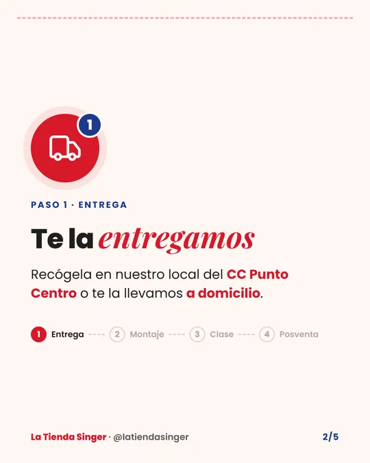
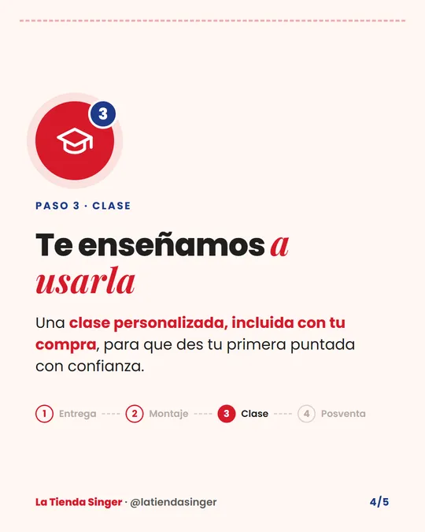
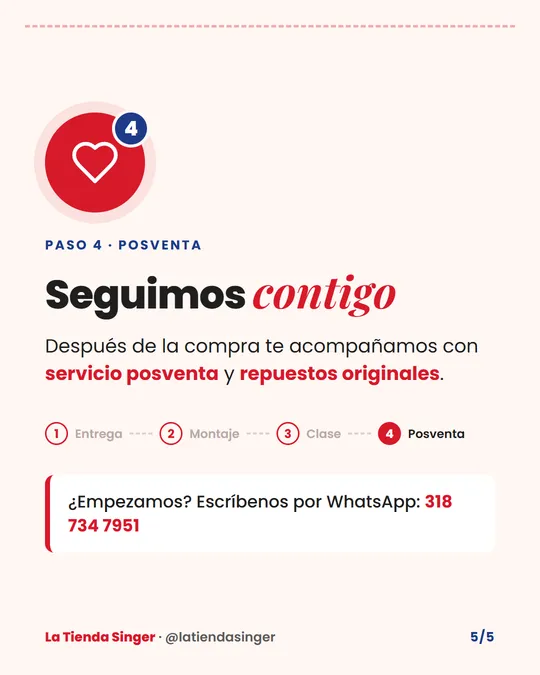
2 · "Tu clase personalizada" (Your personal class)"Tu clase personalizada"
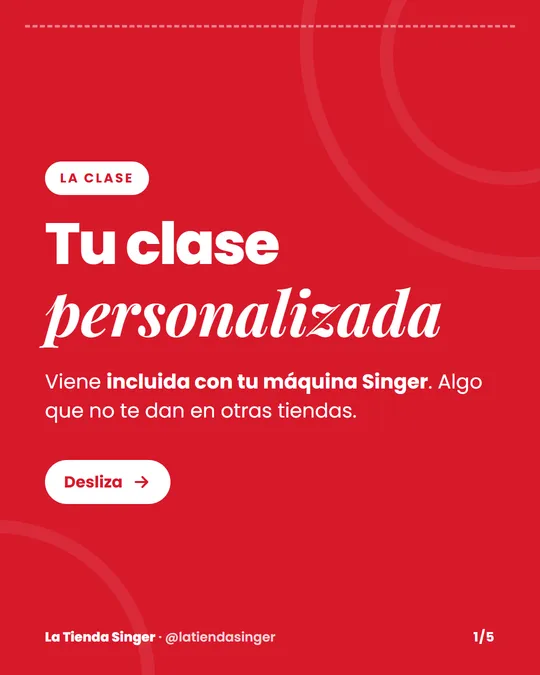
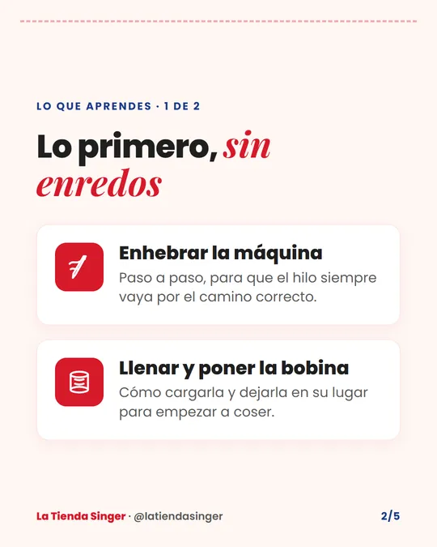
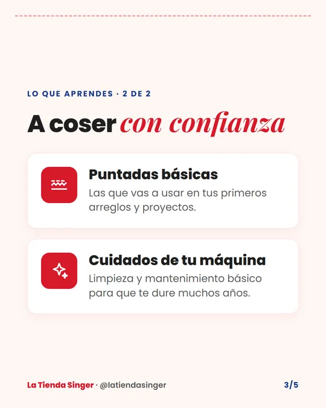
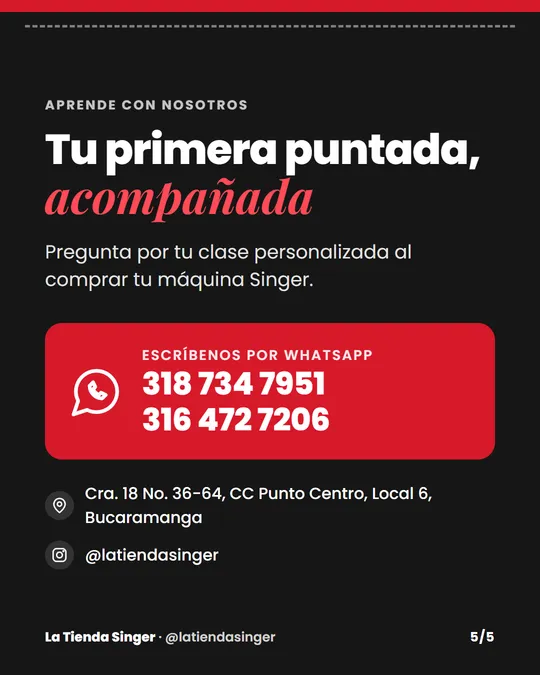
3 · "Después de la compra, seguimos contigo" (After the sale, we're still with you)"Después de la compra, seguimos contigo"
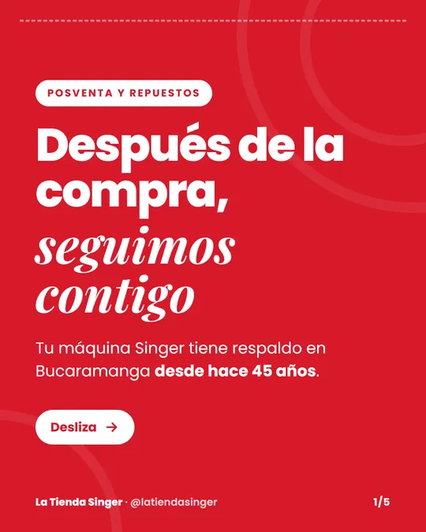
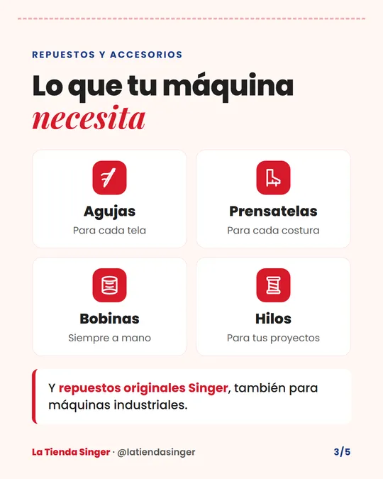
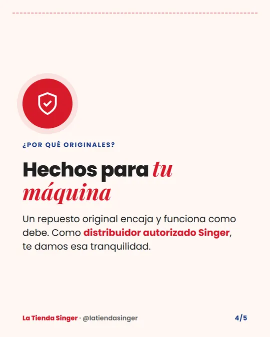
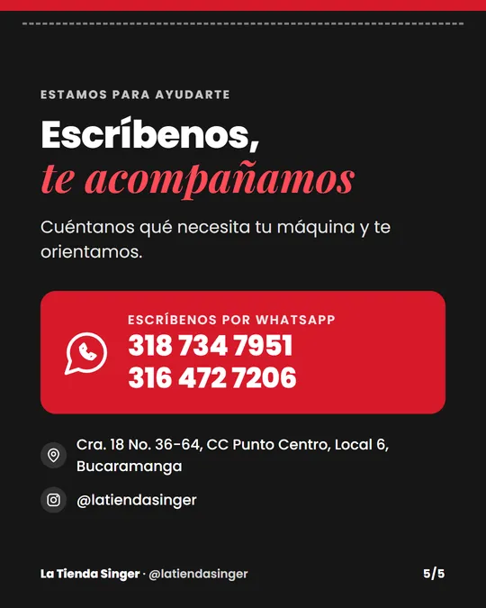
GraphicGráficoProducedProducido
"La Tienda Singer en un vistazo" infographicInfografía "La Tienda Singer en un vistazo"
Half-letter print, 300 dpi · WhatsApp Story 1080 × 1920Media carta impresa, 300 dpi · Historia de WhatsApp 1080 × 1920
Design decisionDecisión de diseño
One layout, two formats. All sizes come from a single unit (1/100 of the width), so the same file prints at the counter and posts as a Story.
Un diseño, dos formatos. Todas las medidas salen de una sola unidad (1/100 del ancho), así el mismo archivo se imprime para el mostrador y se publica como historia.
The "45 years" badge sits at eye level: trust before product.
El sello de "45 años" va a la altura de la vista: primero la confianza, después el producto.
A dark footer and a QR code turn a paper flyer into a way into Instagram and WhatsApp.
Pie oscuro y código QR: el volante en papel se vuelve una entrada a Instagram y WhatsApp.
Built for the core audience: 18 px base text, 48 px+ touch targets, visible focus, full keyboard support and reduced motion when the phone asks for it.
Hecho para el público núcleo: texto base de 18 px, botones de 48 px o más, foco visible, navegación completa con teclado y menos movimiento si el teléfono lo pide.
The quiz doesn't sell; it ends in a chat. The result fills in a WhatsApp message with the recommended machine, so the advisor starts with context.
El test no vende: termina en un chat. El resultado escribe un mensaje de WhatsApp con la máquina recomendada, así la asesora empieza con contexto.
A shareable Story image of each result turns customers into reach.
Una imagen de historia para compartir cada resultado convierte a los clientes en alcance.
Tested: the recommendation logic was checked against all 972 answer combinations.
Probado: la lógica de recomendación se verificó con las 972 combinaciones de respuestas.
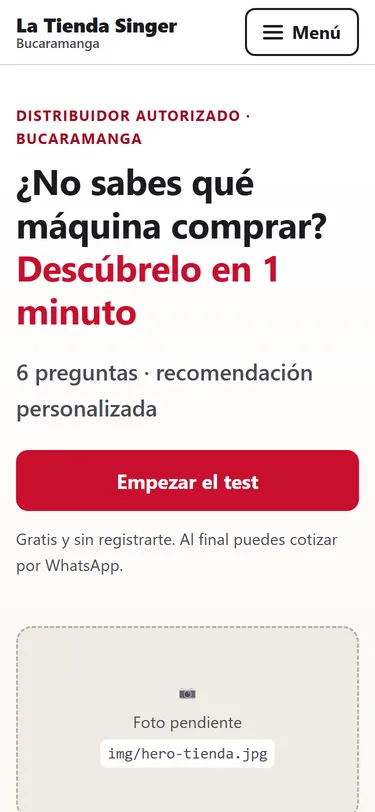
HomeInicioQuestionPreguntaResult (product photo pending)Resultado (foto de producto pendiente)
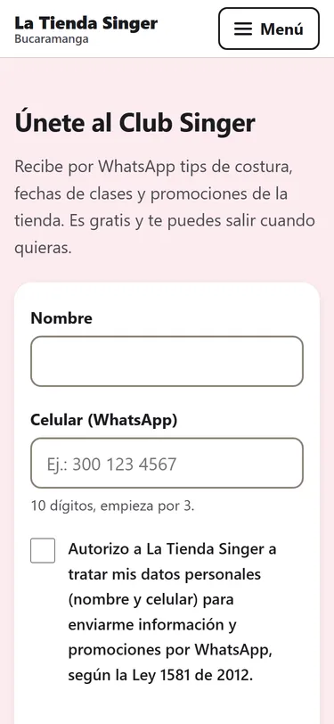
Club Singer
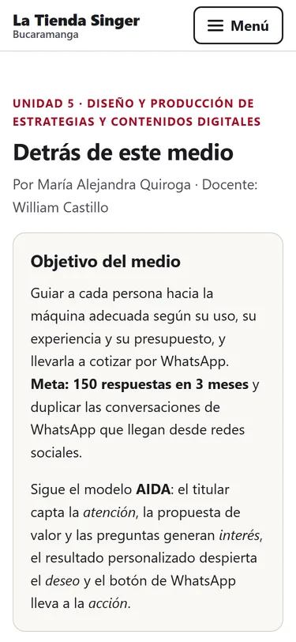
Behind the mediumDetrás del medio
Graphic · Audio · AudiovisualGráfico · Sonoro · AudiovisualProposed, not producedPropuesto, no producido
Pieces in the planPiezas del plan
The strategy proposes these to complete the four formats. They were planned around the same team: one presenter from the store as the brand's face, shot in the store during the weekly 2-hour session.La estrategia las propone para completar los cuatro formatos. Se planearon con el mismo equipo: una presentadora de la tienda como rostro de marca, grabando en el local durante la jornada semanal de 2 horas.
Graphic · proposedGráfico · propuesto
Fichas Singer + PDF guide (product sheets)Fichas Singer + guía PDF
Product sheets and a downloadable guide. The guide is budgeted in the initial investment.Fichas de producto y una guía descargable. La guía está en la inversión inicial.
[ADD: design or sketches if they exist]
Audio · proposedSonoro · propuesto
Cápsula "Hilo y Aguja" (Thread & Needle)
A short audio capsule presented by the store's own voice.Una cápsula de audio corta con la voz de la tienda.
[ADD: script or pilot if one exists]
Audiovisual · proposedAudiovisual · propuesto
"Singer en 60 segundos" (Singer in 60 seconds)
A video series for Reels and TikTok. It's the Hero/Help content of the plan: hooks in the first seconds, one tip per episode.Serie de video para Reels y TikTok. Es el contenido Hero/Help del plan: gancho en los primeros segundos, un tip por episodio.
[ADD: storyboard, script or pilot (embed or compressed MP4)]
08 · Project managementGestión del proyecto
Produce in batches, reply fastProducir en bloque, responder rápido
A plan a small store can sustain: a light team, the store as the set, and one weekly rhythm.Un plan que una tienda pequeña puede sostener: equipo liviano, el local como set y un ritmo semanal.
Timeline · proposedCronograma · propuesto
DayDía 0DayDía 15~Day~Día 60 →
PhaseFase 1 · first 15 daysprimeros 15 días
SetupAlistamiento
WhatsApp Business and Google profile
WhatsApp Business y perfil de Google
Baseline metrics
Línea base de métricas
PDF guide and quiz
Guía PDF y test
PhaseFase 2 · 6 weeksmes y medio
LaunchLanzamiento
Video series and audio
Serie en video y audio
Quiz goes live
Salida del test
First #CoseConSinger challenge
Primer reto #CoseConSinger
PhaseFase 3 · ongoingcontinuo
SeasonTemporada
"Regala una Singer" (Give a Singer) campaign
Campaña "Regala una Singer"
Customer stories
Historias de clientes
More paid media for the bonus and Christmas season
Refuerzo de pauta en primas y Navidad
BudgetPresupuesto
ProposedPropuesto
MonthlyMensual
$2.9MCOP
Team, design, video, audio, paid media and prizes.Equipo, diseño, video, audio, pauta y premios.
Initial investmentInversión inicial
$820KCOP
Stabilizer, lavalier mic, lighting and the PDF guide.Estabilizador, micrófono, luz y guía PDF.
3-month totalTotal a 3 meses
$9.52MCOP
3 × 2.9M + 820K. Calculated from the two figures above.3 × 2,9 M + 820 K. Calculado a partir de las dos cifras anteriores.
Production systemSistema de producción
ProposedPropuesto
ShootGrabar2 h
One batch shoot a week, in the store.Una jornada de grabación semanal en el local.
PublishPublicar3 / wksem
Instagram posts a week, scheduled in Meta Business Suite.Publicaciones semanales, programadas en Meta Business Suite.
Lead timeAnticipación5 daysdías
Rule: every post is scheduled 5 days ahead.Regla: cada publicación se programa con 5 días de anticipación.
ReplyResponder<12 h
WhatsApp reply time, in business hours, with a catalog and quick replies.Respuesta en WhatsApp en horas hábiles, con catálogo y respuestas rápidas.
Smartphone with a good cameraSmartphone con buena cámara
Stabilizer and tripodEstabilizador y trípode
Lavalier microphoneMicrófono de solapa
Ring light or LED panelAro de luz o panel LED
PeoplePersonas
Community manager & editorCommunity manager y editor
Graphic designerDiseñador gráfico
In-store presenter who validates informationPresentadora de la tienda que valida la información
Competitor and partner mapMapa de competencia y aliados
Competitors: sell product and serviceCompetencia: venden producto y servicio
MAKITECMachinery, parts and maintenanceMaquinaria, repuestos y mantenimiento
Multimáquinas de CoserSinger serviceServicio Singer
Brother and Janome storesTiendas Brother y JanomeCompeting brandsMarcas competidoras
Industrial machinery distributorsDistribuidores de maquinaria industrialWorkshop segmentSegmento de talleres
The open spaceEl espacio libre
Teaching people to sewEnseñar a coser
Nobody local owns it. La Tienda Singer can.Nadie en la ciudad lo ocupa. La Tienda Singer puede.
Possible partners: help teach and reachAliados posibles: ayudan a enseñar y llegar
SENA and dressmaking academiesSENA y academias de modisteríaStudents who need a first machineEstudiantes que necesitan su primera máquina
Local entrepreneurs and dressmakersEmprendedoras y modistas localesReal stories for the Hub contentHistorias reales para el contenido Hub
Content creators from SantanderCreadoras de contenido santandereanasReach in the regionAlcance en la región
CC Punto Centro and fabric suppliersCC Punto Centro y proveedores de telasFoot traffic and cross-promotionTráfico y promoción cruzada
09 · KPI
What success would look like in 3 monthsCómo se vería el éxito en 3 meses
These are 3-month targets from the proposal. The plan has not run, so there are no actual results to compare against yet.Son metas a 3 meses de la propuesta. El plan no se ha ejecutado, así que aún no hay resultados reales para comparar.
×2WhatsApp conversations from socialConversaciones de WhatsApp desde redes